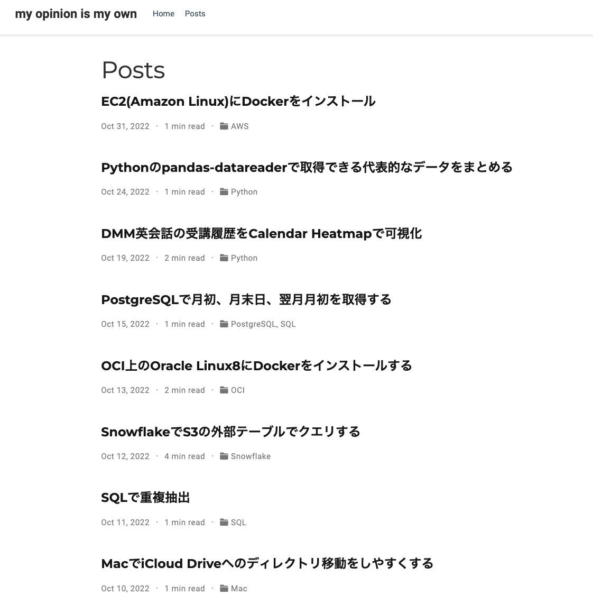
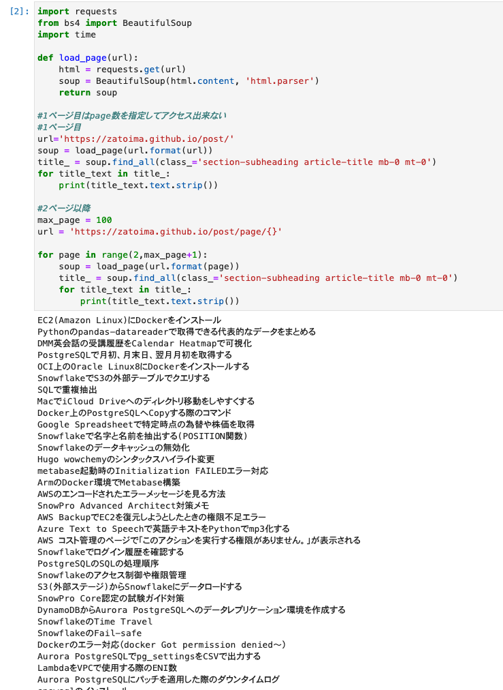

Hugoの記事一覧の取得
BeautifulSoupを使ってHugoの記事一覧を取得する
import requests
from bs4 import BeautifulSoup
import time
def load_page(url):
html = requests.get(url)
soup = BeautifulSoup(html.content, 'html.parser')
return soup
#1ページ目はpage数を指定してアクセス出来ない
#1ページ目
url='https://zatoima.github.io/post/'
soup = load_page(url.format(url))
title_ = soup.find_all(class_='section-subheading article-title mb-0 mt-0')
for title_text in title_:
print(title_text.text.strip())
#2ページ以降
max_page = 100
url = 'https://zatoima.github.io/post/page/{}'
for page in range(2,max_page+1):
soup = load_page(url.format(page))
title_ = soup.find_all(class_='section-subheading article-title mb-0 mt-0')
for title_text in title_:
print(title_text.text.strip())
Post一覧画面

実行

関連しているかもしれない記事